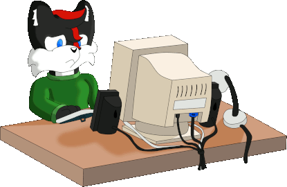
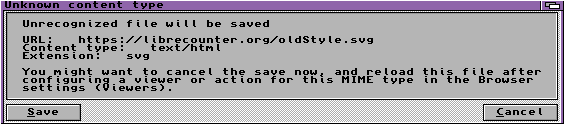

Undergoing Maintenance
...I'll be back!

Sorry! This site is undergoing total maintenance to add some new things and fix other things...
Why am I doing this? Well i've noticed that some parts of the
site have unknowingly become broken and/or bloated.
I've decided to take down the entire site so I can clean, fix and add stuff at
the same time!
Some planned changes are:
Site restructure
Potentially the integration of a different counter system,
since LibreCounter seems to be causing issues for some machines. (Sorry
Amiga Users!)

Fixing of assets that have become missing overtime
Integration Of The TheOldNet webring
Sprucing of the about section
Callie's still home though! Why not spend some time with her by reading the Callie/Online Webcomic?
...Alternatively, why not check out some other cool sites in
these webrings?
(Furry Webring Placeholder)
Proud member of TheOldNet Webring! Check some other cool websites!
[Previous site] -
[Random site] -
[Next site]